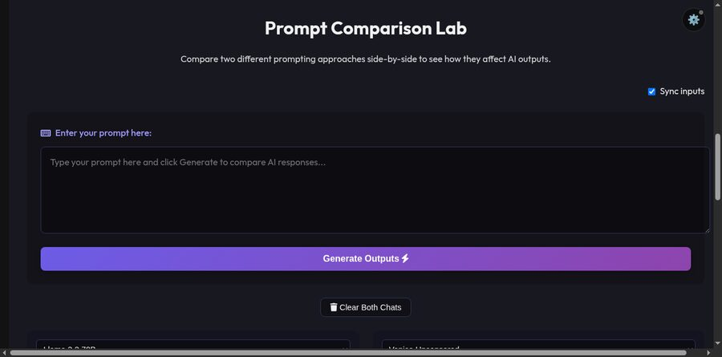
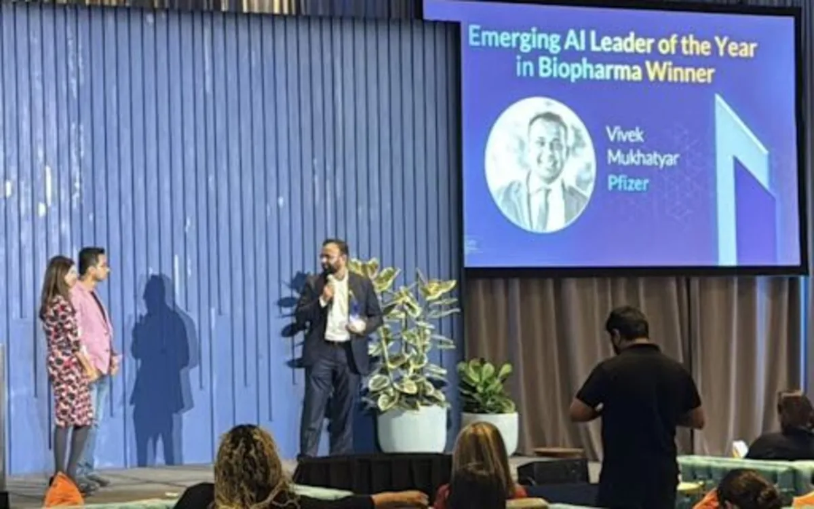

2022
The video mirage
Words became a speaking avatar
Six months before ChatGPT, a synthetic presenter made the point.
GenAI Chutney teaches the model economy — model map, dated benchmarks, the weekly argument. Infinite Productivity keeps the receipts: the arc, the rooms, the builds, in order.
Five moments from 2022 to 2026, two chairmanships, forty-plus broadcasts — and the builds that came out of them.
Each turn changed what a working week could produce — and what a leader was expected to know.
Six months before ChatGPT, a synthetic presenter made the point.
Panels and workshops: explaining the frontier to Medical Affairs.
Prompting turned into delegation; asking well became specifying precisely.
Prompt Optimizer, ProteinLens, Gujarati Kids, KinderQuill. Emerging AI Leader in Biopharma. Chair.
Chair again, a hands-on workshop, and thirty apps that do the work rather than describe it.
Each answers a question the day job asked: can this be governed, repeated, and trusted by someone who did not build it?

Stories that illustrate and narrate themselves, with a grown-up in the loop.
Venice-funded↗
A protein in, its folded 3D structure out — in the browser.
Live app↗
Speech, pictures and conversation for children learning Gujarati.
Live app↗
Field intelligence and strategy for medical science liaisons.
Live app↗
A course platform for engineers who now have to lead.
Live app↗
Structure, constraints and evaluation in one prompting loop.
Try it here↗The gap is never the model. It is the translation.
Two years chairing AI in Medical Affairs taught the same lesson this site is built on: the work is turning capability into a workflow a regulated team will trust, and a demo into a number finance will sign.
So everything here carries its date, its source and its counter-argument. Where I do not know, there is a dash instead of a guess.

Katha Weekly is the easiest way to follow the work. For talks, workshops or the Medical Affairs systems, LinkedIn is the fastest route.